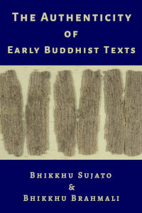
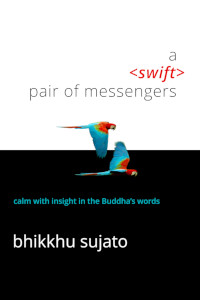

The
Library
-
What the Nikāyas Say and Do not Say about Nibbāna
gives an overview of the usage of the term Nibbāna in the Nikāyas. He argues that, according to the Nikāyas, Nibbāna cannot be regarded as a self; that the Nikāyas do not see Nibbāna as a form of consciousness, including such exceptional kinds of consciousness as anidassana viññāṇa and appatiṭṭhita viññāṇa; nor can Nibbāna be regarded as equivalent to mind, or any particular state of mind. He aims to show that the most reasonable interpretation of the Nikāyas is that final Nibbāna is no more than the cessation of the five khandhas.
90pp (Wisdom & Wonders edition). SuttaCentral References. [2022]
34pp (Buddhist Studies Review edition). PTS References. 2009
-
Simply This Moment
A collection of edited talks by , in the main given to monks and vistors on rains retreat at Bodhinyana monastery.
Ajahn inspires and offers practical advice to attain the beautuful, deeper meditation states. In particular, emphasis is given to jhāna meditation, with insights on the breath meditation as instructed in the Ānāpānasati Sutta (Mindfulness of Breathing).
440pp. 2005
-

The Authenticity of the Early Buddhist Texts
This work articulates and defends a single thesis: that the Early Buddhist Texts originated in the lifetime of the Buddha or a little later, because they were, in the main, spoken by the Buddha and his contemporary disciples. This is the most simple, natural, and reasonable explanation for the evidence.
Our argument covers two main areas:
- The grounds for distinguishing the Early Buddhist Texts (EBTs) from later Buddhist literature;
- The evidence that the EBTs stem from close to the Buddha’s lifetime, and that they were generally spoken by the historical Buddha.
Most academic scholars of Early Buddhism cautiously affirm that it is possible that the EBTs contain some authentic sayings of the Buddha. We contend that this drastically understates the evidence. A sympathetic assessment of relevant evidence shows that it is very likely that the bulk of the sayings in the EBTs that are attributed to the Buddha were actually spoken by him. It is very unlikely that most of these sayings are inauthentic.
188pp. 2014
-
Viññāṇa Anidassana
A wide range of opinions has long surrounded two innocent Pali words: viññāṇa anidassana. They are translated variously, as ‘consciousness that is without feature / signless / invisible / non-manifesting / makes no showing / can not be characterized’, et cetera. This variety already indicates that their meaning is somewhat obscure. This obscurity has, however, not stopped interpreters from giving the words a lot of importance, because some see in viññāṇa anidassana a kind of consciousness essentially equal to nibbāna. But there are many problems with this. Bhikkhu Sunyo examines these problems and discusses why viññāṇa anidassana is not nibbāna, but rather it is the state of boundless consciousness, the second “formless” meditation state.
30pp. 2021
-

Satipaṭṭhāna and Samādhi
investigates the relationship between mindfulness and stillness.
One of the most common unquestioned assumptions among Buddhist meditators is that satipaṭṭhāna is synonymous with vipassanā. This assumption, it seems, often is a result of reading the Satipaṭṭhāna Suttas in isolation without carefully considering the context in which satipaṭṭhāna is used throughout the suttas. When the broader view of the entire Sutta Piṭaka is taken into account, it becomes clear that such an assumption is, at best, only partially correct. In this short study I will investigate the various contexts in which satipaṭṭhāna appear and in particular consider its relationship with samādhi.
19pp. 2016
-

Good Kamma! Bad Kamma! What Exactly is Kamma?
deals with kamma and its related doctrine of rebirth exclusively as they were explained by the Siddhattha Gotama, known to history as the Buddha and the founder of the religion called Buddhism.
This account includes:
- the many misunderstandings surrounding kamma,
- a description of what constitutes kamma
- the connection between kamma and rebirth
- passages from the Pali Canon to illustrate what the Buddha taught regarding kamma
56pp. 2015
-

A Swift Pair of Messengers
clarifies the meaning and function of calm and insight in Buddhist meditation.
This work is an attempt to clarify the meaning and function of samatha (tranquility) and vipassanā (insight) in Buddhist meditation. Much has been written on this topic, yet a cloud of confusion persists. Though modern Buddhism claims to rest on a foundation of inquiry, many meditators seem willing to invest their spiritual trust in meditation techniques without carefully considering exactly what it is they are practicing.
This is not a beginner’s introduction nor a guide to the nuts and bolts of practice. It is intended for those who have some knowledge and experience in Buddhist meditation, but who are confused by the diverse and often conflicting opinions expressed by meditation teachers. All of those teachers, however, are unanimous on one point—the greatest Teacher, the Teacher of teachers, is the Buddha himself. We wish to follow the path of the Buddha, so our starting point should be to see what the Buddha himself said, and did not say, about meditation. Even though the main aim here is theoretical clarity, I hope to offer inspiration and practical tools for meditation as well.
üîä AudioBook running time: 7:08:08 2012
-
A Swift Pair of Messengers
clarifies the meaning and function of calm and insight in Buddhist meditation.
This work is an attempt to clarify the meaning and function of samatha (tranquility) and vipassanā (insight) in Buddhist meditation. Much has been written on this topic, yet a cloud of confusion persists. Though modern Buddhism claims to rest on a foundation of inquiry, many meditators seem willing to invest their spiritual trust in meditation techniques without carefully considering exactly what it is they are practicing.
This is not a beginner’s introduction nor a guide to the nuts and bolts of practice. It is intended for those who have some knowledge and experience in Buddhist meditation, but who are confused by the diverse and often conflicting opinions expressed by meditation teachers. All of those teachers, however, are unanimous on one point—the greatest Teacher, the Teacher of teachers, is the Buddha himself. We wish to follow the path of the Buddha, so our starting point should be to see what the Buddha himself said, and did not say, about meditation. Even though the main aim here is theoretical clarity, I hope to offer inspiration and practical tools for meditation as well.
175pp. 2012
-

Wisdom of Silence
The truth is always silent. The lie is always with words.
discusses the key aspects of Buddhist practice:
- Acceptance
- Meditation
- Attachment
- The Five Hindrances
- The Fourfold Focus of Mindfulness
- Offerings
23pp. 2018
-

Buddhist Cosmology
investigates certain aspects of the suttas that appear extraordinary. Examining the Buddhist cosmology of cosmic cycles, solar systems and the fate of the earth, he shows a relationship to modern scientific cosmology.
34pp. 2015
-

The Basic Method of Meditation
, in this now classic booklet, gives an overview of the process and precise instructions for medition.
Meditation is the way to achieve letting go. In meditation one lets go of the complex world outside in order to reach the serene world inside. In all types of mysticism and in many traditions, this is known as the path to the pure and powerful mind. The experience of this pure mind, released from the world, is very wonderful and blissful.
28pp. 2002
-
Dependent Origination
In this essay discusses the meaning of the twelve factors that make up the standard description of dependent origination. He analyses the nature of the causes linking each pair of neighbouring factors, using a Western model of causality. Having explained what the Buddha meant by dependent origination, he then examines perhaps the most interesting question: Why did the Buddha place such importance on dependent origination? What is its purpose? In the final section, Ajahn proposes that the function of dependent origination is threefold:
- To explain how there can be rebirth without a soul.
- To answer the question “What is life?”
- To understand why there is suffering, and where suffering comes to an end.
43pp. 2002
-

Opening Up to Kindfulness
helps us to discover the basic elements of Buddhism. Helping us to understand:
- How mindfulness must be infused with compassion and softness in the Buddhas teachings.
- The development of loving-kindness.
- How to adopt the best view in any circumstance.
- Three fundamentals of Buddhism: Nothing Lasts, Suffering and Nobody There.
- The law of kamma.
- The ability to listen.
- How to dealing with addictions
174pp. 2021
-

Dependent Origination
Ajahn Brahmāli gives a concise explanation of dependent origination that, in my view, extracts its core principle while remaining faithful to the original intent. A major point that Ajahn Brahmāli makes, both explicitly and through his mode of explanation, is the integral connection of dependent origination with the teaching of rebirth. It has become fashionable today to interpret dependent origination simply as an affirmation of the interdependence and interconnectedness of all events, and then to extol it as a forerunner of the scientific method. But while dependent origination may well point to interdependence and a scheme of universal interconnections, this is not its primary purpose. The primary purpose, as seen in the most archaic Buddhist texts, is to show the causal origination of suffering, which is sustained precisely by our bondage to rebirth. Thus, by revealing the conditions that keep us bound to repeated birth, dependent origination also indicates what must be done to gain liberation.
—Bhikkhu Bodhi
19pp. 2013
-

Dependent Liberation
on how to cultivate joy and mindfulness that leads to liberation.
The Upanisā Sutta describes the practice of Buddhism, centred on meditation, as a natural process of one mind state causing a second phenomenon that leads to another experience ... and so on to the ultimate end point of all processes, Nibbāna.
19pp. 2013
-

A History of Mindfulness
From the preface:
The purpose of this book is to analyze the textual sources of 20th century Theravāda meditation theory. The focus is on the prime source works for what I call the vipassanāvāda, the ‘vipassanā-doctrine’. This is a special interpretation of some central meditation concepts that has become the de facto orthodoxy in Theravāda Buddhism, although not without controversy. The term vipassanāvāda is useful in that the Pali suffix -vāda points to the importance of the theory on which the practices are based. More than that, the same suffix comes to mean not just a doctrine, but also the school that follows the doctrine. This is all too appropriate in the current case, since ‘vipassanā’ has come, rather strangely, to be used as if it refers to an actual school of Buddhism (rather than an aspect of meditation cultivated in all schools).
383pp. 2012
-

A Flower Called Mettā
gives precise instructions on the cultivation of loving-kindness.
Like a lotus at dawn which slowly unfurls its petals to the warmth of the sun, our mind, while spreading mettā, is soft, gentle and joyful.
Mettā is love that never demands that things have to be certain ways before they are embraced.
When you have difficulty in maintaining awareness or when sati (mindfulness) takes a day off, you just need to add a bit of softness into whatever you are doing.
We sit to be aware. Whether we will gain samādhi or not is not the issue. We don’t have expectations. What we should do is to be aware of our body that is sitting meditation. This is a state of mind with sati.
The softness of the heart can sometimes be stunningly powerful as if it would overtake our whole body.
Whenever your mind becomes gentle and kind even for one minute, that minute is worth our existence.
47pp. 2017